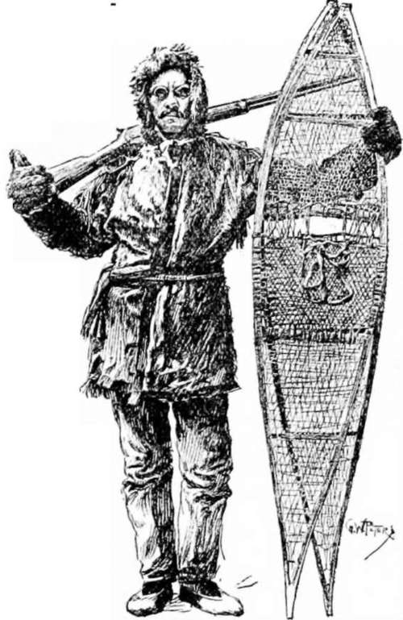
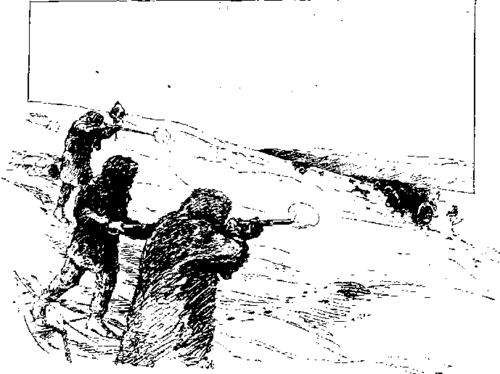

Hunting Musk-Ox With The Dog Ribs. Part 4
Description
This section is from the book "Hunting", by Archibald Rogers. Also available from Amazon: Hunting.
Hunting Musk-Ox With The Dog Ribs. Part 4
On leaving Fort Rae, Johnnie had agreed to assist me in skinning the game killed; he now found that his own affairs would require all his attention. Esyuh helped me to skin two, while I finished the third by moonlight, freezing my fingers in the operation. He afterward demanded seventy skins —thirty-five dollars —for his labor.
It was impossible to skin the heads in the darkness. I wrapped the skins around them so that they would not freeze during the night.
Another blizzard was raging in the morning, which prevented moving, but enabled me to attend to the heads, which had not frozen very much; but the skins around them were stiff and solid, so that it was impossible to fold them up for transportation.
The Author.
I spent the day sawing the skulls in halves, so that they might be loaded on the sled, sitting beside a little smoke arising from the bones of the musk-ox, which contained enough grease to burn, though not very readily. Our fires were started with birch-bark, a small roll being carried by each man for that purpose. The pine-wood was cut in sticks a foot in length, and finely split, then built up in a "log cabin" or a cone. Each man took his turn blowing to keep it alight, as the wood was not dry, and the quantity so small that it required constant attention.
We were destined to spend the next day in the blankets, with the clouds of powdery snow settling down through the smoke-hole of our lodge upon us. We had had but two meals a day since leaving the Coppermine, and when lying storm-bound we ate but one. When travelling, although we were voraciously hungry before nightfall, it was thirst which troubled us the most, as we were running most of the time.
Early on the nineteenth day we sighted musk-ox while yet a long distance from them. While ascending a steep hill I was delayed by my sled sinking in the soft snow until the great awkward balls into which the skins were frozen, projecting at the sides, made the load drag heavily. When I reached the top the others were a quarter of a mile in advance, and instead of waiting for me to come up, they had released their dogs, and were likely to kill every musk-ox before I could reach them. Johnnie, remembering the havoc which my Winchester was liable to make in his fur returns, thought best to "suspend the rules" of the hunting-code, and let me buy of them if I wanted any musk-ox.
Without releasing my dogs, which were wildly tugging at their collars, I started forward with little hopes of killing any musk-ox, but in excellent humor for slaughtering a few Dog Ribs. Fortune, however, smiled upon me. Four bulls of the largest size broke away together without a dog in pursuit, and came within range. This was not so much like butchering them; they were running much faster than I could on snow-shoes, and had a chance for their lives. I killed two as they passed me about a hundred yards distant, and wounded the others so that they were bagged after a run of half a mile. I had now killed seven musk-ox, and had as many on my sled as the Hudson's Bay people had told me it was possible to haul. When Johnnie returned from chasing the scattered herd, I stated my plain and unbiassed opinion of him in all the Red River French and Dog Rib that I could command. His deprecatory "Yazzy" changed to a sheepish "Nazee" (good) when I informed him that I had secured all the robes that I wanted. He refused to carry a skeleton for me at any price; not even a head or half a split skull would he carry, though I gave him two robes for carrying back the lodge.
The next day was spent in camp; the others were engaged in skinning the animals killed, and in boiling bones for grease to eat on the return trip. I thus had an opportunity to prepare the two skulls for transportation.
On the twenty-first day of the hunt we started homeward —the turning-point of the expedition. We were all heavily loaded with the loose bulky skins. The sleds were frequently overturned, and if our dogs had not been in unusually good condition, would never have been brought out at all. My load extended over both ends of the sled, and was nearly as high as my shoulders, with the four lodge-poles on top, making it no easy matter to keep everything lashed firmly.
On the twenty-third day a blinding snow-storm prevented moving before midday, when we pushed on through the soft snow, without meat for ourselves or the dogs. On the return trip we only secured five caribou, which was less than half rations for five men and sixteen dogs.
We were now burning our lodge-poles for fuel. On the night of the twenty-fifth day the lodge was set up for the last time, with two poles only, and with our sled lines made fast to the circle of sleds, which were always enclosed, gave sufficient support. We started at 6 a.m., determined to reach the Coppermine, some fifty miles distant, before camping. In the afternoon we came upon a lodge-pole, standing beside a sled-track which we had followed all day, upon which a line written in the syllabic characters informed us that Jimmy's party was to reach the woods that evening also.
A Running Shot.
At half-past ten, after sixteen and a half hours of continuous travelling, we reached the little grove of pines, which seemed more welcome than any harbor to the storm-tossed sailor. We were all too much fatigued to cut much brush, and fell asleep in a little hole scooped in the snow, before a few logs which made such an uncomfortably hot fire that we did not enjoy it as we had anticipated. But we would no longer have to sleep upon snow or flat rocks; we would not have to sleep with our moccasins and frozen blanket footings next our bodies to dry them, and at noonday we could have tewoh to quench our thirst.
After five hours' rest we were awakened by Jimmy, who reminded us that there was nothing to eat, and that we must push rapidly on. My load weighed over five hundred pounds, and the dogs were getting pitifully weak. I pushed on the sled, and carried a load on my back to assist them. We were three days in reaching the camps. We only rested five hours at night, and then hurried on again, as the teams were failing rapidly for want of food. On the twenty-eighth day the first signs of a thaw appeared; the snow softened just enough to cause it to stick to our snow-shoes, so that it made them heavy to carry, and, worse still, lumps of ice would accumulate every few minutes which soon blistered the bottoms of our feet over the entire surface.
On the last two days before reaching the camps the heavy snow-shoes caused the mal de raquette to reappear, which made it simply torture to move; yet we were now in the woods, where the soft snow required heavier work in the management of the sleds.
At two in the afternoon of the twenty-ninth day we reached the vicinity of the camping-place from which we had started, and fired several rounds to announce our arrival. A few minutes later we dashed into—a deserted camp. The lodges were gone, the snow had drifted over their sites. Their skeleton poles offered a dreary welcome to us, as, tired, hungry, and disappointed, we turned away in no pleasant humor to follow the track along which a line of slanting poles indicated the direction of departure. We were upon an old, hard track from which the sled frequently overturned into the soft snow on either side, and my dogs were about giving up altogether. A great deal more powder was burned as we approached the camps three hours later. As I passed one of the first lodges, my sled swayed off the track, and caught against a tree, much to the amusement of a couple of young women, who, after watching my attempts to right it, remarked, "Yazzy Wahkahwee nat-suthly" (the white man is weak, indeed). One of them grasped the sled-line to show me how to straighten up a load, and tugged and hauled and tugged again without producing the slightest effect. I am afraid that I laughed very ungallantly as the discomfited maiden fled to the shelter of the lodge. Mrs. Jimmy came to me with a very cordial greeting, exclaiming, "Merci, Merci — Cho. Nazee etjerrer-kah" — ("Thanks, big thanks, for the good musk-ox hunt"); evidently ascribing our success, in a measure, to my presence.
It was nearly midnight on the fourth of May when my weary dogs crept over the hill into Fort Rae, and halted at the door they had left two months before. The long march of eight hundred miles was over; but the goggles and snow-shoes, the whip and harness, were not suffered to be long laid aside, for five days later I had started on the far longer journey down the Mackenzie.
Continue to: